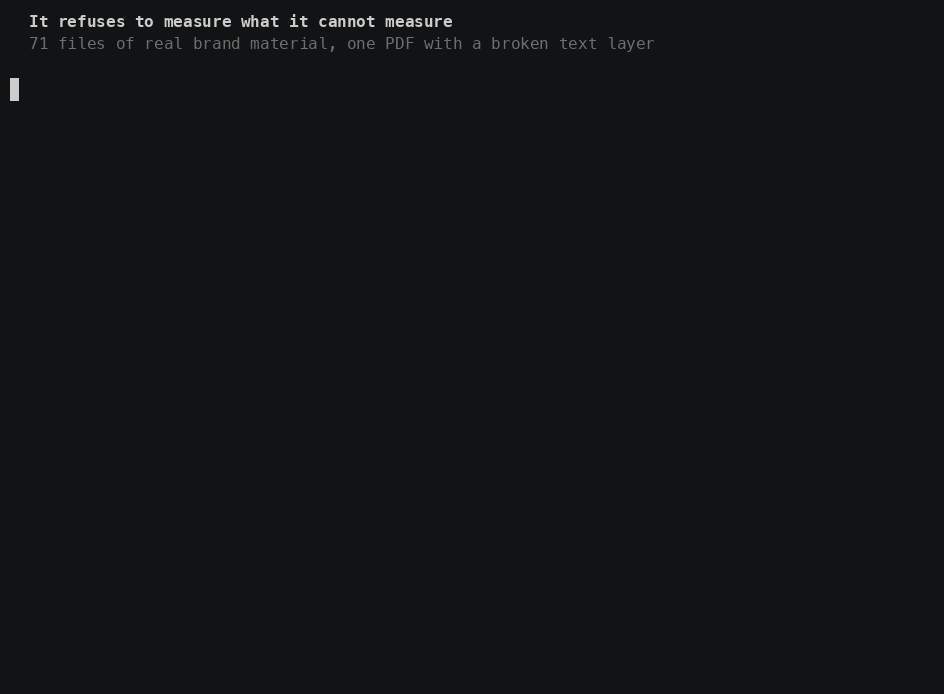
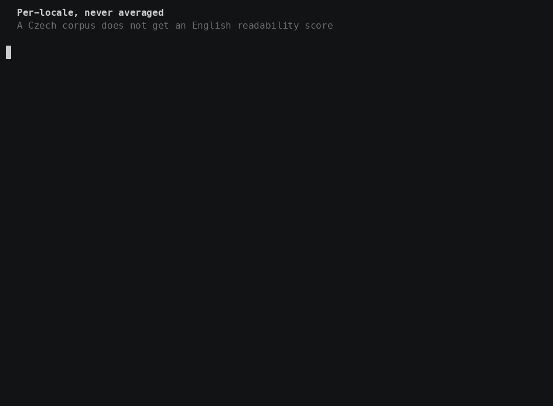
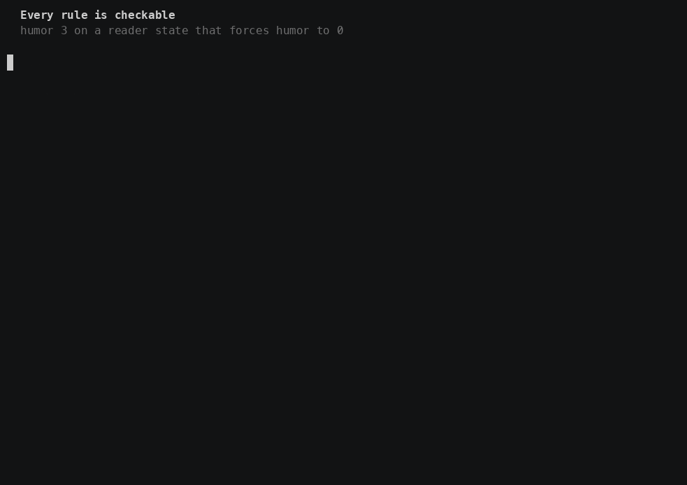
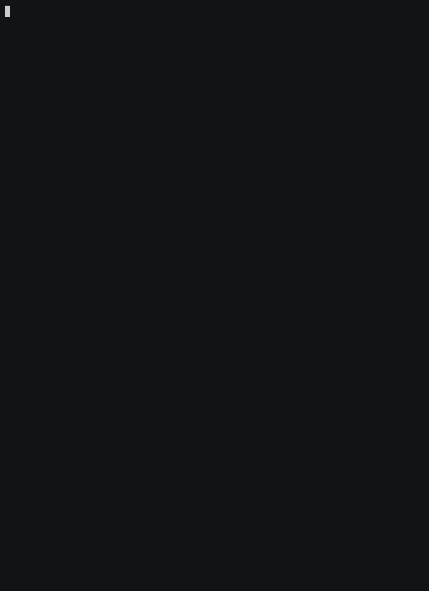

Every company has a line like it. Almost none can say who decided, based on what, or whether it is still true.
So the guide drifts from what the company actually publishes. Nobody notices, because there is nothing to notice with.
A normal voice guide
Be warm, but professional.
Who decided? Unrecorded. Based on what? Unrecorded. Still true? Unknowable.
A rule in this plugin
V1 · Plainspoken confirmed
Means: clarity above all. We strip hype. Rules out: fluffy metaphor, upsell language Evidence:e12, e18. Two choices you made between rewrites of your own copy, dated and stored.
The mechanism
One axis runs three systems.
Every rule carries a confidence level. That single value decides what the plugin asks you, what it blocks, and what it retires.
Pick a level. All three change together.
Note the fourth. When two sources genuinely disagree (a formal marketing site, a casual product UI), that is information, not error. Both sides are recorded; neither is enforced until you decide which.
Getting started
It reads what you have already written.
No template to fill in. Point it at what you already have - pages and UI strings in the project, a style guide or brand deck dropped in, even a page on your live site - in almost any format. It measures that material and turns what it still does not know into questions.
scanWhich files actually contain copy?
ingestAn existing style guide enters as confirmed.
measureSentence length, contractions, reading grade. Per language, never averaged.
draftFill every slot, honestly labelled.
gapsRank the unknowns by how much each unlocks.
interviewForced choices between rewrites of your own strings.
canonizeValidate, compile, commit.
Why forced choice, not a questionnaire
Asked “how formal are you, 1–5?”, people answer unreliably. They are describing themselves.
Shown two rewrites of their own copy, they answer well. They are judging a sentence they recognise.
Your string: “Campaign scheduled successfully.” A Your campaign is scheduled. Nice work. ← warmth B Campaign scheduled successfully. ← unchanged baseline C All set. It goes out Thursday at 9am. ← specificity
What happens to your material
Point it at anything you have already written - a style guide, an old newsletter, a brand deck living in a completely different folder, a page on the web - in almost any format you already have it in.
Most of that it reads for itself, the same bytes to the same result every time. What it genuinely cannot - a scanned page, a photograph of a slide - it shows to the model instead.
Either way, it is read once, then thrown away. What stays is what it proved: enough to recompute the whole voice, or subtract any one source later, without ever keeping the file itself.
Optional: a speaker’s material. Registered under that speaker, measured on its own, never mixed into the house numbers. See Speakers.
The tone model
Voice is constant. Tone flexes.
Your voice does not change between a launch and a failed payment. How warm, how direct and how detailed does, and so does whether humor is allowed at all.
Ten contexts × eight reader states is eighty cells. Nobody authors eighty. So the plugin stores eighteen rows of numbers (eight state vectors, ten context offsets) and computes the rest.
Click any cell. The arithmetic below is real: same clamp, same gates as the plugin.
Optional. A speaker states its own default dials once; the difference from the house shifts every computed cell. Authored cells are never shifted.
Context × reader state
Hatched rows: humor forced off, whatever the numbers say.
Selected cellnone selectedinterpolated
The hard rules
Two gates on humor.
Every other dial is arithmetic. Humor is not, because the cost is not symmetrical: too flat is a bad sentence; a joke at someone whose payment just failed is a lost customer.
Gate 1
Humor requires an authored cell. If the arithmetic says three, the answer is still zero until a person has written and approved that cell.
Gate 2
Three reader states force humor to zero, in authored cells too: frustrated, anxious-at-risk, disappointed-leaving.
The failure mode of a computed cell must be “a bit flat”, never “joked at someone whose payment just failed”.
Both gates are functions in code, not instructions in a document. A rule written in prose is one a language model can reason its way around. A function that returns zero cannot be argued with.
Always on, under every rule
Accessibility. No directional language, links that name their destination, plain words, acronyms defined, headings nested, alt text, most important thing first.
Translation-readiness. Active voice, no double negatives, no idioms, one term per concept, spelled-out units, ISO currency codes.
Applied to every draft and every review, not as a checklist at the end. Both are always blockers - whatever confidence the rule they break carries, and even when no rule mentions them at all. The one thing here that does not answer to the confidence axis.
Where it lives
Markdown, in your repository.
No database, no dashboard, no account. A folder of markdown beside your code, readable in a pull request and versioned with everything else.
.voice-and-tone/
config.ymlProfiles, locales, thresholds - and where your material lives.CONTEXT.mdGENERATED. ~600 tokens. Loaded before every piece of copy.voice.mdConstant. Three to six characteristics, each with what it rules out.tone.mdThe eighteen rows of numbers, plus the cells you actually authored.audience.mdWho you write for, and the states they arrive in.lexicon.mdavoid → prefer, ranked by what your corpus actually breaks.mechanics.mdGrammar, casing, punctuation.channels/Per-channel playbooks, generated on second use.locales/Typography seeded automatically; register and anglicisms asked.examples/Approved, rejected, and before/after pairs.sources/Where you drop brand material. Never committed - that is the point.evidence/ledger.mdNumbered, dated, and bidirectional.fingerprint.jsonMeasured metrics, and the baseline drift is measured against.manifest.jsonWhich files carry copy, and their per-locale totals.sources.jsonWhat was analysed and what it proved - so the material above can be safely thrown away.conflicts.mdWhere two sources genuinely disagree. Both sides kept, neither enforced.profiles/<slug>/One overlay per speaker. Optional - see Speakers.CHANGELOG.mdAppended on every approved change.
Why CONTEXT.md is generated
The framework this builds on has a documented flaw: its voice page and its own summary list different characteristics, because the summary was kept by hand and drifted. Here it is recompiled every time, and hand edits are discarded by design.
Why evidence points both ways
Rules cite their evidence; each entry lists the rules it produced. Say “ignore the 2024 newsletters” and the plugin knows exactly which rules to reopen instead of guessing.
What you actually type
Eleven commands, six skills that need no command.
Commands are explicit. Skills trigger themselves. Ask for a button label and the microcopy skill loads uncalled.
Command
What it does
:init
Discover, measure, interview, canonize.
:connect
Point it at brand material, anywhere, and see what has been learned.
:write
Draft for a context and a reader state.
:review
Critique with severities and file:line anchors.
:rewrite
Off-brand text to on-brand, showing what changed and why.
:learn
Turn your edits into rules, once corroborated.
:audit
Coverage, drift, rule health, scored inventory.
:status
What you have, what it is set to, what is missing. Screen or page.
:sync
Validate and recompile the card.
:localize
Apply a locale pack.
Optional: speakers
:speaker
Add, list, or remove a speaker.
Skill
Triggers when
voice-and-tone
You ask for copy, or for something to sound like you.
voice-review
You ask whether something is on brand.
microcopy
Buttons, errors, empty states, notifications.
voice-discovery
No knowledge base exists, or you offer new material.
voice-maintenance
You edited a draft, or asked how healthy the guide is.
voice-observability
You ask what state the guide is in, or what is missing.
The critic
One agent runs in a fresh context: it sees the knowledge base and the draft, never the reasoning behind it. It cannot be told why a choice was made, so it cannot be talked into accepting it.
It also takes the read-back test. Given the copy with its labels stripped, it must name the context and reader state. Guess wrong and the tone missed. No human needed.
In use
See it run.
Six takes against a real corpus: 71 files of a brand's own Czech material, nothing staged. Five recorded in the terminal, and the page the last of them writes.
The status screen is ASCII because a terminal is where it is read. Add --artifact and the same command renders the same state as a page you can send to whoever decides what the brand sounds like.

↓ Scroll
It refuses to measure what it cannot measureOne PDF in the corpus has a broken text layer: 44% of its words are single characters. It is refused rather than averaged in, and the corpus stays clean.

↓ Scroll
Per-locale, never averagedenglish=n/a for Czech. Syllables, contractions and passive voice have no Czech method here, so nothing is invented to fill the column.

↓ Scroll
Every rule is checkablehumor 3 on a reader state that forces humor to 0. Caught with a file:line anchor, its own code, and a non-zero exit.

↓ Scroll
The whole state, computed rather than describedCoverage, drift, sources, settings, and a ranked list of what is missing, each with the command that closes it.
↓ Scroll
The same state, as a page you can sendRun it twice with the clock pinned and the bytes are identical. The page is generated from the state, not written alongside it.
↓ Scroll
The page itselfAll of it, scrollable. Validation findings, per-locale drift against the frozen baseline, the corpus, the source register, and the thresholds that govern the lot.
1 of 6
Why it can be trusted
Nothing here is staged. The corpus is a real brand's material, the refused PDF is genuinely broken, and the rule that fails validation was broken on purpose to show what happens. Every take is one continuous recording.
The page is computed, not written: one collector, one state object, a second renderer. Run it twice with the clock pinned and the bytes are identical, which is why it cannot drift from the screen it was made from.
Speakers. Under --profile the same status writes a page per speaker - see Speakers.
Staying true
Your edits are evidence. Two of them are a rule.
Rewrite something the plugin drafted and it records what changed. But one edit never becomes a rule. A single editing pass is one opinion, however many changes it contains.
Try it. Note which button moves the counter.
Evidence ledger: leverage → use
0 of 2 independent corroborations.
The one exception
An unambiguous word swap fires immediately. Change leverage to use and there is nothing to corroborate.
What never becomes a rule
Factual corrections. “25 MB” to “20 MB” means your limit moved, not that the voice is wrong. Learning from those would enforce product facts as style.
The question audits ask
A rule broken every time and kept anyway is not a rule. The audit surfaces those and makes you choose: enforce it, or retire it.
New, and optional
One house, many speakers.
Some brands write in more than one first-person voice: a founder posting under her own name, a support team, a product line, a mascot, an assistant. Each of those can be a speaker. It keeps its own voice and inherits everything else from the house.
None of this is required. A brand that speaks with one voice never sees it.
What a speaker is
It owns its voice characteristics, its default dials, the cells it authored, and its examples.
It inherits the house’s lexicon, mechanics, audiences, channels and locales, and may override any of them by ID - except what the house has locked.
Two levels, fixed. An overlay always sits on the house, never on another overlay, so “which rule won” is always answerable.
The overlay
profiles/<slug>/
CONTEXT.mdGENERATED speaker card.voice.mdIts characteristics. Replaces the house’s.tone.mdIts default dials, and the cells it authored.lexicon.mdAdditions and overrides, merged by ID.examples/Its own approved, rejected, and before/after pairs.evidence/Its own fingerprint and baseline.sources/Its own inbox. Never committed, like the house’s.
Every file is optional. Missing means inherited.
Locks
locks: in config.yml names the house rules no speaker may override - usually the “never say” list. They print on every speaker card under House guardrails (locked), and a speaker that breaks one fails validation.
One new command
:speaker
What it does
add <slug>
Scaffolds the overlay, reads the material you point it at, interviews you on that speaker’s own strings, compiles its card.
list
One line per speaker: voice rules, authored cells, overrides, drafts pending. Reads only.
remove <slug>
Reopens every rule the speaker’s evidence produced, then removes the overlay. Each step is a proposed diff.
All three are backed by one script, scripts/speaker.mjs, which does the scaffolding, so every speaker starts the same way.
Choosing who speaks
--profile <slug> selects a speaker on :write, :rewrite, :localize, :review, :status, :sync, :audit and :connect. Plain language works too: “write this as Maya” finds the speaker whose name matches.
A default for the whole project is one line in CLAUDE.md: voice-and-tone: default profile maya. Learning needs no flag: a draft remembers which speaker it was written as, and a correction lands with that speaker.
/voice-and-tone:write --profile maya a welcome for a new subscriber
Status knows them
The house view gains a speakers panel and five gap detectors, G17 to G21: a speaker with no voice yet, no baseline, material never read, a stale card, or a house with speakers and no locks. Under --profile the same command writes a page per speaker.
The critic asks one more question
With two or more speakers, the read-back test also asks: which speaker wrote this? A wrong guess is a finding. Several speakers who all sound like the house is the failure this exists to catch.
Init asks early
One voice, several speakers, or decide later? Whatever you answer, the house is built first. Speakers can be added at any time.
A knowledge base with no speakers is unchanged, byte for byte.
Get started
Eight steps, and the first four are the whole thing.
Nothing to configure before you begin. The plugin reads your project and asks about what it cannot work out on its own.
1
Install it
Node 18+ recommended, not required. Without it, metrics are estimated and rules cap at assumed. Precision degrades; nothing breaks.
/plugin install voice-and-tone
2
Point it at a project
Scans, measures, then interviews you on the gaps. Creates .voice-and-tone/ in your project root. In a hurry? --quick asks three questions. Init asks whether there is one voice or several; you can also add speakers later.
/voice-and-tone:init
3
Commit the folder
It is markdown, so it belongs in version control. Voice changes then arrive as pull requests you can read and revert. Drafts and any raw material you dropped in stay out of git - what it measured from them does not.
4
Write something
It infers the context and reader state from your request. Plain language works too; the skills trigger without a command.
/voice-and-tone:write an error for a file over the upload limit
5
See where you stand
Coverage, drift, sources, settings, and a ranked list of what is missing, each with the command that closes it. It reads only, so a stale number stays visible. Add --artifact for a page you can send.
/voice-and-tone:status [--artifact]
6
Check something
Findings carry file:line anchors and a severity from the rule they break. Add --critic for the independent reviewer.
/voice-and-tone:review content/pricing.md
7
Edit freely, then teach it
Rewrite whatever it drafted. Your changes become evidence; two independent ones become a proposed rule. Nothing is written without your approval.
/voice-and-tone:learn
8
Keep it honest
Audit reports coverage, drift, and rules broken so often they are not rules, then asks you to decide. Sync validates and recompiles the card.
/voice-and-tone:audit/voice-and-tone:sync
9
Add speakers optional
Several voices under one brand? Add each one; it inherits the house and keeps its own voice.
![The voice and tone status page. A yellow band carries the brand name, a one-line reading of where the knowledge base stands, and the date it was measured. Below it: six figures including stage, tone matrix coverage and validation errors; a ranked list of what to do next, each with the command that closes it; the discovery pipeline; and the tone matrix, ten contexts against eight reader states, with authored cells printed in solid ink and computed cells in pale non-photo blue. Below that: validation findings, per-locale drift against the frozen baseline, the corpus, the source register, and the thresholds that govern all of it.](status-artifact.png)